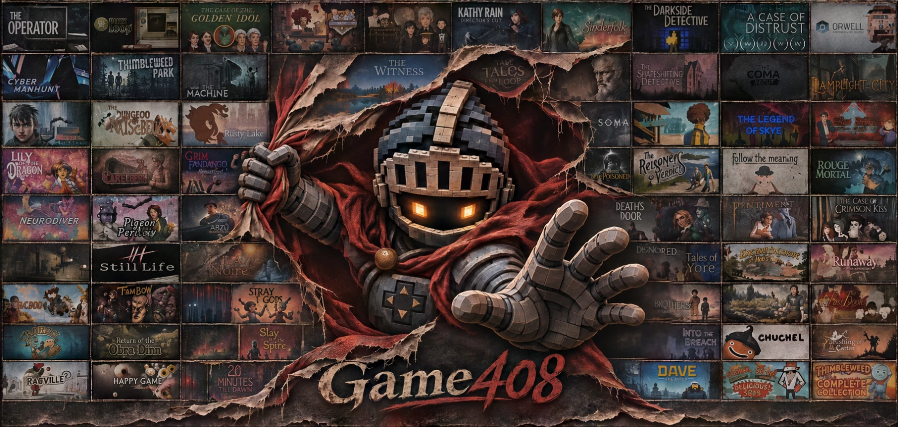
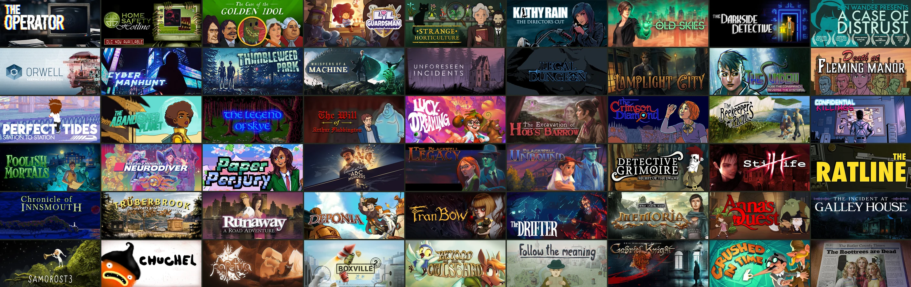
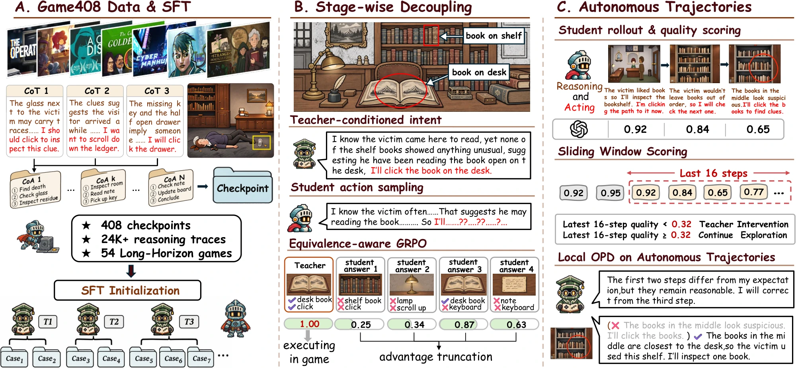

Task completion
Average each game's stage and achievement completion rate with equal weight. Report efficiency and mean latency separately.

Game408: Deep Reasoning from Clues to Actions in Long-Horizon Narrative Game Worlds
Game408-Val evaluates 83 checkpoints from 12 held-out games. Completion is measured per game. Step judgments use the evidence available before each action.
Average each game's stage and achievement completion rate with equal weight. Report efficiency and mean latency separately.
Score operation and target separately. A correct key dragged to the wrong lock gets zero for target grounding.
Check logic, trajectory consistency, clues, memory, and judgment. With all seven criteria applicable, each is worth 0–5 and the total is divided by 35.
Screenshots and reference moves come from recorded play. Choices are written for this demo, and cases skip intervening actions. See the review notes
Game408 starts agents at story checkpoints in mostly 2D narrative and puzzle games. They can inspect screens, revisit clues, and take one discrete action at a time.

The proposed agent learns from human annotations, trains execution under teacher-provided intent, and jointly distills reasoning and actions on autonomous trajectories.

Game408-Val · 12 held-out games, 83 story checkpoints
Paper-reported results. Human play is listed as a reference. Public submissions are pending. Metric definitions
Game408: Deep Reasoning from Clues to Actions in Long-Horizon Narrative Game Worlds